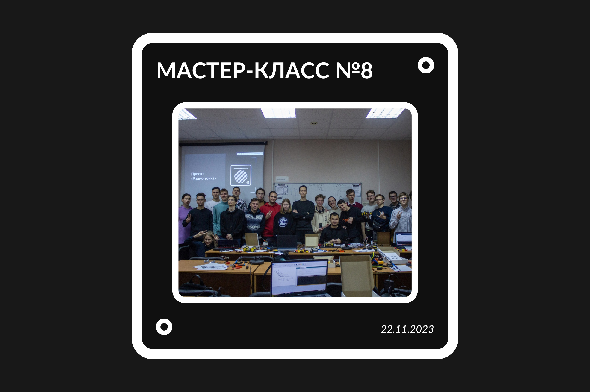

О проекте
Проект «Радио.точка» - это серия мастер-классов по основам электроники, радиотехники, схемотехники и программированию микроконтроллеров, а также по практическому изготовлению радиоэлектронных изделий (подбор элементов, пайка, настройка).
На мастер-классах теоретические занятия сочетаются с практическими, что способствует приобретению обучающимися новых знаний и навыков, с помощью которых они смогут в дальнейшем грамотно и рационально применять компоненты и устройства различного типа и назначения в собственных разработках.
Участники проекта работают с базовыми радиоэлектронными компонентами и создают свои собственные схемы и устройства, которые забирают себе на память.
/////

/////
Новости
Готов еженедельный фотоотчет с восьмого мастер-класса! Посмотреть его можно в прикреплённом альбоме. üì∏
/
/
На этой неделе в объектив попала первая группа, однако у второй тоже есть несколько классных фотографий на телефон!
/
Следите за обновлениями группы, здесь будет ещё много всего интересного, и до встречи на заключительных занятиях! üòé
/
Проект реализуется при поддержке Росмолодёжь.Гранты
/
